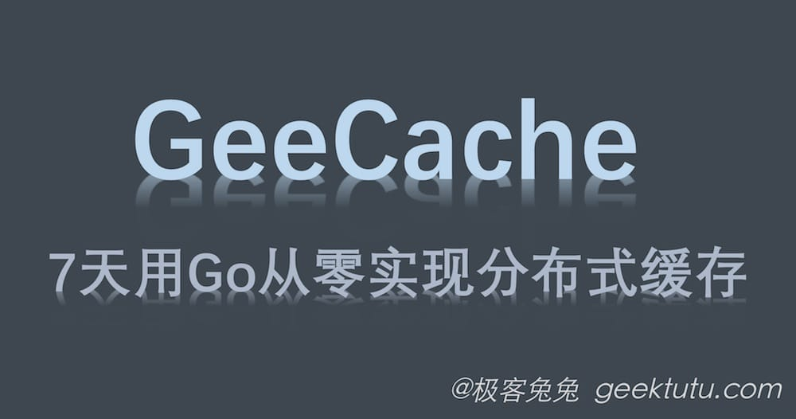

7天用Go从零实现分布式缓存GeeCache
7天用 Go语言/golang 从零实现分布式缓存 GeeCache 教程(7 days implement golang distributed cache from scratch tutorial)，动手写分布式缓存，参照 groupcache 的实现。功能包括单机/分布式缓存，LRU (Least Recently Used) 缓…

1 谈谈分布式缓存
第一次请求时将一些耗时操作的结果暂存，以后遇到相同的请求，直接返回暂存的数据。我想这是大部分童鞋对于缓存的理解。在计算机系统中，缓存无处不在，比如我们访问一个网页，网页和引用的 JS/CSS 等静态文件，根据不同的策略，会缓存在浏览器本地或是 CDN 服务器，那在第二次访问的时候，就会觉得网页加载的速度快了不少；比如微博的点赞的数量，不可能每个人每次访问，都从数据库中查找所有点赞的记录再统计，数据库的操作是很耗时的，很难支持那么大的流量，所以一般点赞这类数据是缓存在 Redis 服务集群中的。
商业世界里，现金为王；架构世界里，缓存为王。
缓存中最简单的莫过于存储在内存中的键值对缓存了。说到键值对，很容易想到的是字典(dict)类型，Go 语言中称之为 map。那直接创建一个 map，每次有新数据就往 map 中插入不就好了，这不就是键值对缓存么？这样做有什么问题呢？
1）内存不够了怎么办？
那就随机删掉几条数据好了。随机删掉好呢？还是按照时间顺序好呢？或者是有没有其他更好的淘汰策略呢？不同数据的访问频率是不一样的，优先删除访问频率低的数据是不是更好呢？数据的访问频率可能随着时间变化，那优先删除最近最少访问的数据可能是一个更好的选择。我们需要实现一个合理的淘汰策略。
2）并发写入冲突了怎么办？
对缓存的访问，一般不可能是串行的。map 是没有并发保护的，应对并发的场景，修改操作(包括新增，更新和删除)需要加锁。
3）单机性能不够怎么办？
单台计算机的资源是有限的，计算、存储等都是有限的。随着业务量和访问量的增加，单台机器很容易遇到瓶颈。如果利用多台计算机的资源，并行处理提高性能就要缓存应用能够支持分布式，这称为水平扩展(scale horizontally)。与水平扩展相对应的是垂直扩展(scale vertically)，即通过增加单个节点的计算、存储、带宽等，来提高系统的性能，硬件的成本和性能并非呈线性关系，大部分情况下，分布式系统是一个更优的选择。
4）...
2 关于 GeeCache
设计一个分布式缓存系统，需要考虑资源控制、淘汰策略、并发、分布式节点通信等各个方面的问题。而且，针对不同的应用场景，还需要在不同的特性之间权衡，例如，是否需要支持缓存更新？还是假定缓存在淘汰之前是不允许改变的。不同的权衡对应着不同的实现。
groupcache 是 Go 语言版的 memcached，目的是在某些特定场合替代 memcached。groupcache 的作者也是 memcached 的作者。无论是了解单机缓存还是分布式缓存，深入学习这个库的实现都是非常有意义的。
GeeCache 基本上模仿了 groupcache 的实现，为了将代码量限制在 500 行左右（groupcache 约 3000 行），裁剪了部分功能。但总体实现上，还是与 groupcache 非常接近的。支持特性有：
- 单机缓存和基于 HTTP 的分布式缓存
- 最近最少访问(Least Recently Used, LRU) 缓存策略
- 使用 Go 锁机制防止缓存击穿
- 使用一致性哈希选择节点，实现负载均衡
- 使用 protobuf 优化节点间二进制通信
- ...
GeeCache 分7天实现，每天完成的部分都是可以独立运行和测试的，就像搭积木一样，每天实现的特性组合在一起就是最终的分布式缓存系统。每天的代码在 100 行左右。
3 目录
- 第一天：LRU 缓存淘汰策略 | Code - Github
- 第二天：单机并发缓存 | Code - Github
- 第三天：HTTP 服务端 | Code - Github
- 第四天：一致性哈希(Hash) | Code - Github
- 第五天：分布式节点 | Code - Github
- 第六天：防止缓存击穿 | Code - Github
- 第七天：使用 Protobuf 通信 | Code - Github
附 推荐阅读
通俗学习地图：缓存系统是在缩短“找数据”的路程
缓存的本质并不神秘：把昂贵操作的结果放在更近、更快的地方，下次用同一个键查询时直接复用。真正困难的是回答四个问题：放多少、淘汰谁、多个节点怎样分工、同一份数据被同时请求时怎么办。
业务请求一个 key
↓
本机缓存命中？──是──→ 直接返回 ByteView
│否
↓
这个 key 应由哪个节点负责？
├─ 远端节点 → 通过 HTTP + Protobuf 获取
└─ 本机节点 → 调用 Getter 从数据库等慢速数据源加载
↓
写入 LRU，再返回
七天会逐步补齐这条查找链：
- 第一天用哈希表和双向链表实现 O(1) 查找、更新与 LRU 淘汰。
- 第二天把 LRU 包成线程安全的
Group，并引入“缓存未命中后如何加载”的Getter。 - 第三天让缓存节点能够通过 HTTP 对外提供数据。
- 第四天用一致性哈希决定一个键应该落到哪个节点，减少扩缩容时的数据迁移。
- 第五天把节点选择、远程获取和本地回源串成完整分布式流程。
- 第六天用 singleflight 合并同一进程内针对同一个键的并发回源，缓解缓存击穿。
- 第七天把节点间消息改为 Protobuf，获得明确的数据结构和更紧凑的二进制编码。
阅读时始终区分三层：lru.Cache 只管内存淘汰；Group 只管按键获取数据的策略；HTTPPool 只管节点之间如何找到并传输数据。把这些职责揉在一起也能跑，但很难测试和扩展。
GeeCache 是教学系统，不等于可直接上线的分布式缓存。生产环境还需考虑节点鉴权、限流、数据过期、监控、热键、跨节点故障、传输大小限制和一致性要求。理解这些缺口，反而能帮助你看清本教程每个组件解决的边界。